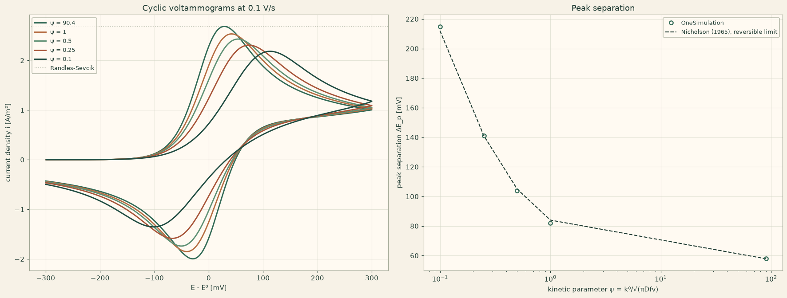

Docs › Examples › Cyclic voltammetry at a planar macroelectrode
Electrochemistry · 1D
Cyclic voltammetry at a planar macroelectrode
The potential of a large planar electrode is swept up and back while a one-electron redox couple diffuses to and from its surface, for kinetics from reversible to irreversible.
Run locally with OneSimulation. The example downloads are free. Running them requires an activated runtime. Runtime Alpha 0.2.1a7 · CPython 3.13 on macOS (Apple Silicon), Ubuntu 22.04 (x86-64), and Windows x64. Installation and activation · View pilot plans. Scope of the reference checks.

What it computes
OneSimulation solves diffusion of both species with quadratic elements on a graded line and imposes the Butler-Volmer rate with the triangular potential programme as a nonlinear surface reaction; the current is the boundary flux of the recorded states.
What it checks
The reversible peak current is 0.9993 of the Randles-Sevcik value with a 58 mV peak separation (57.8 mV expected) and E_pa - E_p/2 = 57.0 mV (56.5 mV); for slower kinetics the separations 82, 104, 141 and 215 mV follow Nicholson's 84, 105, 141 and 212 mV within the 1 mV potential step.
The notebook
The complete notebook, cell by cell. Run it to produce the figures and the comparison printout.
Cyclic voltammetry sweeps the potential \(E\) of a working electrode linearly with the scan rate \(v\) to a switching potential and back, and records the current. For a redox couple \(\mathrm{R}\rightleftharpoons\mathrm{O}+e^-\) the shape of the voltammogram reveals the diffusion coefficient, the formal potential \(E^0\) and the rate of electron transfer. Far from the edges of a large electrode the transport is one-dimensional diffusion normal to its surface,
and at the electrode the oxidation rate follows Butler-Volmer kinetics with the standard rate constant \(k^0\) and the transfer coefficient \(\alpha\),
| boundary | O | R |
|---|---|---|
| electrode \(x=0\) | produced at the rate \(r\) | consumed at the rate \(r\) |
| bulk \(x=L\) | \(c_\mathrm O=0\) | \(c_\mathrm R=c^\infty\) |
Setup. 1 mM of the reduced form, \(D=10^{-9}\) m²/s for both species, \(\alpha=0.5\), 25 °C; the potential runs from \(E^0-0.3\) V to \(E^0+0.3\) V and back at \(v=0.1\) V/s.
Reference. For fast electron transfer the peak current density is given by the Randles-Sevcik equation, \(i_p=0.4463\,F c^\infty\sqrt{fvD}\), and the anodic and cathodic peaks lie \(2.22\,RT/F=57\) mV apart (A.J. Bard, L.R. Faulkner, Electrochemical Methods, 2nd ed., Wiley 2001, §6.2). For slower kinetics the separation grows with the dimensionless rate \(\psi=k^0/\sqrt{\pi D f v}\) as tabulated by R.S. Nicholson, Anal. Chem. 37 (1965) 1351.
import numpy as np
from onesim.cad.d1 import Line
from onesim.meshing import NonuniformLineMesher
from onesim.numerics import Numerics
from onesim.numerics.fem import FiniteElement, Lagrange
from onesim.numerics.linear import SparseDirect
from onesim.numerics.nonlinear import Newton
from onesim.numerics.time import BDF, BackwardEuler
from onesim.physics.chemistry import (
FixedConcentration,
SpeciesTransport,
SurfaceReaction,
TransportSpecies,
)
from onesim.simulation import Problem, Simulation
from onesim.simulation.initial_conditions import InitialValue
from onesim.visualization import plots, theme
theme.set()Cell, potential programme and kinetics
The diffusion layer grows to \(\sqrt{D\,t}\approx0.1\) mm during the 12 s cycle; the cell is 1 mm deep, so the bulk boundary stays undisturbed. The potential is a triangle wave; the rate law is written once and serves both the boundary condition and the current.
faraday, gas_constant, temperature = 96485.33212, 8.314462618, 298.15
f = faraday / (gas_constant * temperature)
diffusivity, bulk, alpha, formal = 1.0e-9, 1.0, 0.5, 0.0
start, switch, scan_rate = formal - 0.3, formal + 0.3, 0.1
half_cycle = (switch - start) / scan_rate
potential = lambda t: start + scan_rate * (
half_cycle - np.abs(np.asarray(t) - half_cycle)
)
depth = 1.0e-3
print(
f"cycle {2 * half_cycle:.0f} s, diffusion length sqrt(D t) = {np.sqrt(diffusivity * 2 * half_cycle) * 1e6:.0f} µm, cell depth {depth * 1e3:.0f} mm"
)Mesh
Eighty quadratic elements, graded geometrically from 0.1 µm at the electrode to 70 µm at the bulk.
line = Line(start=(0.0, 0.0, 0.0), end=(depth, 0.0, 0.0))
faces = depth * (np.geomspace(1.0, 701.0, 81) - 1.0) / 700.0
mesh = NonuniformLineMesher(faces=tuple(faces)).generate(line)
print(
f"{mesh.cell_count} elements, first {faces[1] * 1e6:.2f} µm, last {(faces[-1] - faces[-2]) * 1e6:.0f} µm"
)Model and potential sweeps
SurfaceReaction declares the Butler-Volmer rate on the electrode with the stoichiometry R → O; the species balance then carries the consumption of R and the production of O as the outward fluxes \(-\nu_i r\). Five standard rate constants span the range from reversible (\(\psi\approx90\)) to strongly irreversible (\(\psi=0.1\)); each sweep runs with 1 mV steps of the second-order BDF method. The current density is \(F\) times the flux of R into the electrode, boundary_flux of the recorded states; the initial state, which the kinetics have not yet relaxed, is left out.
psi_values = (90.4, 1.0, 0.5, 0.25, 0.1)
rate_constants = [
psi * np.sqrt(np.pi * diffusivity * f * scan_rate) for psi in psi_values
]
voltammograms = {}
for psi, k0 in zip(psi_values, rate_constants):
model = SpeciesTransport(
domain=line.line,
species=(
TransportSpecies("O", diffusivity=diffusivity),
TransportSpecies("R", diffusivity=diffusivity),
),
)
rate = lambda c, t: k0 * (
c["R"] * np.exp((1 - alpha) * f * (potential(t) - formal))
- c["O"] * np.exp(-alpha * f * (potential(t) - formal))
)
problem = Problem(
name="Cyclic voltammetry",
geometry=line,
physics=(model,),
boundary_conditions=(
SurfaceReaction(
physics=model,
boundary=line.boundaries.start,
rate=rate,
stoichiometry={"R": -1, "O": 1},
),
FixedConcentration(
physics=model, boundary=line.boundaries.end, value={"O": 0.0, "R": bulk}
),
),
initial_conditions=(
InitialValue(model.field("O"), 0.0),
InitialValue(model.field("R"), bulk),
),
)
result = Simulation(
problem=problem,
mesh=mesh,
numerics=Numerics(
spatial=FiniteElement(element=Lagrange(order=2)),
nonlinear_solver=Newton(
linear_solver=SparseDirect(),
absolute_tolerance=1e-12,
relative_tolerance=1e-10,
),
time_integrator=BDF(order=2, startup=BackwardEuler()),
),
).run(start_time=0.0, end_time=2 * half_cycle, time_step=1e-3 / scan_rate)
reduced = result.field(model.field("R"))
times = np.asarray(reduced.times)[1:]
voltammograms[psi] = (
potential(times),
faraday
* np.array(
[reduced.boundary_flux(line.boundaries.start, time=t) for t in times]
),
times,
)Comparison with the references
Peak currents and potentials of the forward (anodic) and reverse (cathodic) sweeps. The reversible separation for a switching potential 300 mV beyond \(E^0\) is 57.8 mV (Bard and Faulkner, Table 6.2.1); Nicholson's values hold to about 1 mV for the switching potential used here.
randles_sevcik = 0.4463 * faraday * bulk * np.sqrt(f * scan_rate * diffusivity)
reference = {90.4: 57.8, 1.0: 84.0, 0.5: 105.0, 0.25: 141.0, 0.1: 212.0}
peaks = {
psi: (
np.argmax(np.where(t <= half_cycle, i, -np.inf)),
np.argmin(np.where(t > half_cycle, i, np.inf)),
)
for psi, (E, i, t) in voltammograms.items()
}
separations = {
psi: (voltammograms[psi][0][a] - voltammograms[psi][0][c]) * 1e3
for psi, (a, c) in peaks.items()
}
print(f"Randles-Sevcik peak current density: {randles_sevcik:.4f} A/m²")
print(
f"{'psi':>6s} {'k0 [m/s]':>10s} {'i_pa [A/m²]':>12s} {'i_pa/i_RS':>10s} {'E_pa [mV]':>10s} {'E_pc [mV]':>10s} {'dEp [mV]':>9s} {'reference':>10s}"
)
for (psi, (a, c)), k0 in zip(peaks.items(), rate_constants):
E, i, t = voltammograms[psi]
print(
f"{psi:6.2f} {k0:10.2e} {i[a]:12.4f} {i[a] / randles_sevcik:10.4f} {(E[a] - formal) * 1e3:10.1f} "
f"{(E[c] - formal) * 1e3:10.1f} {separations[psi]:9.1f} {reference[psi]:10.1f}"
)
E, i, t = voltammograms[90.4]
a = peaks[90.4][0]
half_peak = E[np.argmin(np.abs(i[:a] - 0.5 * i[a]))]
print(
f"reversible wave: E_pa - E_p/2 = {(E[a] - half_peak) * 1e3:.1f} mV (theory 2.20 RT/F = {2.20e3 / f:.1f} mV), "
f"E_pa - E0 = {(E[a] - formal) * 1e3:.1f} mV (theory 1.109 RT/F = {1.109e3 / f:.1f} mV)"
)Figure
The voltammograms for the five rate constants, and the peak separation against the reference values.
fig = plots.figure(1, 2, size=(16, 6))
plots.line(
y={
f"ψ = {psi:g}": ((E - formal) * 1e3, i)
for psi, (E, i, t) in voltammograms.items()
},
hlines={"Randles-Sevcik": randles_sevcik},
xlabel="E - E⁰ [mV]",
ylabel="current density i [A/m²]",
title="Cyclic voltammograms at 0.1 V/s",
legend="upper left",
ax=fig[0],
)
plots.line(
points={"OneSimulation": (list(separations), list(separations.values()))},
reference={
"Nicholson (1965), reversible limit": (
list(reference),
list(reference.values()),
)
},
scale="logx",
xlabel="kinetic parameter ψ = k⁰/√(πDfv)",
ylabel="peak separation ΔE_p [mV]",
title="Peak separation",
legend="upper right",
ax=fig[1],
)
plots.show()Going further
Vary the scan rate at a fixed \(k^0\): the peak current grows with \(\sqrt v\) while the peaks drift apart, the classical way to measure \(k^0\). An unequal transfer coefficient makes the wave asymmetric; a homogeneous follow-up reaction of O (reactions= in SpeciesTransport) removes the reverse peak (EC mechanism).